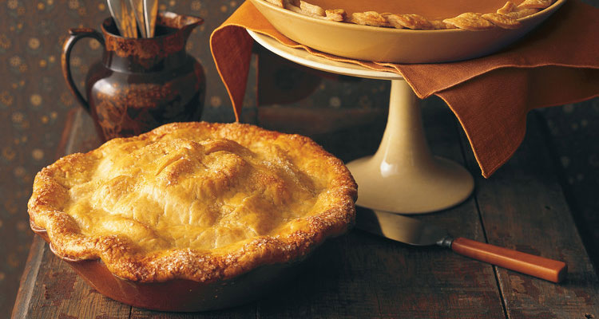

No Thanksgiving would be complete without homemade apple pie. Our version is double-crust and filled with a spiced mix of the fruit. Crystals of sanding sugar, scattered on top, and crunch and shine.
Easy Old-Fashioned Apple Pie
(Yield: Makes one 9-inch double-crust pie)
Ingredients:
- Flaky pate brisee dough, previously prepared
- 5 Tbsp all-purpose flour, plus more for work surface
- 1 large egg yolk
- 1 Tbsp heavy cream
- 4 pounds assorted cooking apples, peeled, cored, and cut into 1/4- to 1/2-inch-thick slices
- 3 Tbsp fresh lemon juice
- 1/2 cup granulated sugar
- 1 1/4 tsp ground cinnamon
- 1/4 tsp ground nutmeg
- 1/4 tsp salt
- 1/4 cup cold (1/2 stick) unsalted butter, cut into 1/2-inch pieces
- Sanding sugar, for sprinkling
Directions:
- Turn out 1 piece of dough onto a lightly floured work surface. Roll into a 13-inch round, about 1/8 inch thick. Fit into 9-inch pie plate. Trim edges flush with rim. Freeze until firm, about 30 minutes.
- Roll out remaining dough on parchment paper to a 13-inch round, about 1/8 inch thick. Transfer to a baking sheet; refrigerate until firm, about 30 minutes.
- Preheat oven to 400 degrees. Whisk egg yolk and cream in a small bowl; set egg wash aside. Put apples, lemon juice, granulated sugar, flour, cinnamon, nutmeg, and salt in a large bowl; toss to combine. Fill pie shell with apple mixture, and dot with butter. Lightly brush edge of pie with a wet pastry brush. Place dough round on top of pie. Trim edges flush with rim; press to seal. To decorate:
- Crimp edges as desired.
- Make four 1/2-inch slits in center of pie.
- Brush top with egg wash; sprinkle with sanding sugar.
Freeze 30 minutes.
- Place pie on a baking sheet. Bake until crust begins to turn golden brown, about 20 minutes. Reduce oven temperature to 350 degrees. Bake until crust is golden brown and juices are bubbling, about 35 minutes. Cover with foil if browning too quickly. Let cool completely on a rack.
Source:
Martha Stewart Living, November 2005
601 West 26th Street
New York, NY 10001
1-800-999-6518
E-mail